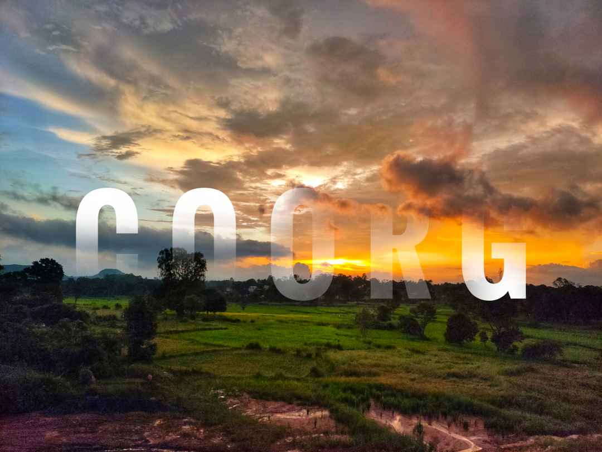

Kodagu (also known by its former name Coorg) is an administrative district in the Karnataka state of India. Before 1956, it was an administratively separate Coorg State,at which point it was merged into an enlarged Mysore State.
It occupies an area of 4,102 square kilometres (1,584 sq mi)in the Western Ghats of southwestern Karnataka. In 2001 its population was 548,561, 13.74% of which resided in the district's urban centre, making it the least populous of the 31 districts in Karnataka.
The nearest railway stations are Mysore Junction, located around 95 km away and Thalassery and Kannur in Kerala, at a distance of 79 km. The nearest airports are Kannur International Airport in Kerala (59 km from Kodagu) and Mangalore International Airport (118 km from Kodagu).
Kodagu is rated as one of the top hill station destinations in India. Some of the most popular tourist attractions in Kodagu include Talakaveri, Bhagamandala, Nisargadhama, Abbey Falls, Dubare, Nagarahole National Park, Iruppu Falls, and the Tibetan Buddhist Golden Temple.
Talakaveri is the place where the River Kaveri originates.The temple on the riverbanks here is dedicated to Lord Brahma, and is one of only two temples dedicated to Brahma in India and Southeast Asia. Bhagamandala is situated at the Sangama (confluence) of two rivers, the Kaveri and the Kannika. A third river, the Sujyothi, is said to join from underground, and hence this spot is called the Triveni Sangama. Iruppu Falls is a sacred Kodagu Hindu spot in South Kodagu in the Brahmagiri hill range. The Lakshmana Tirtha River, with the waterfalls, flows nearby and has a Rameshwara temple on its banks. It is said that this sacred river was created when Laxmana, prince of Ayodhya and younger brother of Lord Rama, shot an arrow into nearby hill, the Brahmagiri hill. Chelavara falls and Thadiandamol peak are also in South Kodagu. Nagarahole is a national park and wildlife resort.
